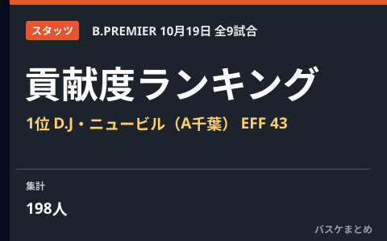

10月19日の貢献度ランキング 1位はD.J・ニュービル（A千葉）の43
10月19日に行われたりそなB.LEAGUE PREMIER(Bプレミア)9試合のボックススコアから、貢献度（EFF）の上位選手をまとめました。この日の貢献度1位はA千葉のD.J・ニュービルで、24得点・14リバウンド・6アシストを記録し、貢献度43をマークしました。
貢献度 TOP3
- 1位D.J・ニュービルA千葉EFF 43
- 2位ジャレット・カルバー仙台EFF 41
- 3位マーク・スミス秋田EFF 37
貢献度ランキング TOP10
| 順位 | 選手・所属 | EFF | 得点 | REB | AST | STL | BLK | 出場分 |
|---|---|---|---|---|---|---|---|---|
| 1 | D.J・ニュービルA千葉 | 43 | 24 | 14 | 6 | 2 | 1 | 35 |
| 2 | ジャレット・カルバー仙台 | 41 | 38 | 5 | 3 | 2 | 1 | 31 |
| 3 | マーク・スミス秋田 | 37 | 27 | 8 | 8 | 4 | 0 | 34 |
| 4 | デジョン・ジャロウA東京 | 33 | 21 | 10 | 2 | 1 | 1 | 24 |
| 5 | デレク・パードンA千葉 | 30 | 20 | 11 | 3 | 1 | 0 | 32 |
| 6 | 岡田 侑大島根 | 30 | 17 | 5 | 9 | 3 | 1 | 33 |
| 7 | ジョシュ・ホーキンソン東京SR | 29 | 21 | 6 | 4 | 1 | 2 | 27 |
| 8 | アレックス・カーク川崎 | 29 | 16 | 11 | 4 | 0 | 2 | 33 |
| 9 | スコット・エサトン名古屋D | 28 | 19 | 7 | 2 | 3 | 1 | 24 |
| 10 | ジャック・クーリー琉球 | 28 | 18 | 11 | 3 | 1 | 1 | 24 |
EFF＝貢献度、REB＝リバウンド、AST＝アシスト、STL＝スティール、BLK＝ブロック、出場分＝出場時間（分）。
国籍別ランキングは未掲載です。公式国籍情報を確認できない選手を名前から分類しません。
部門別リーダー
| 部門 | 上位3人 |
|---|---|
| 得点 | ジャレット・カルバー（仙台）38、マーク・スミス（秋田）27、キヨンテ・ジョンソン（A東京）27 |
| リバウンド | ヤニー・ウェッツェル（秋田）16、コフィ・コーバーン（広島）16、D.J・ニュービル（A千葉）14 |
| アシスト | 岡田 侑大（島根）9、キーファー・ラベナ（琉球）9、マーク・スミス（秋田）8 |
| スティール | オーティス・フレイジャー（宇都宮）5、マーク・スミス（秋田）4、セルジオ・エル ダーウィッチ（仙台）4 |
| ブロック | ジョーダン・ヒース（島根）3、ジョシュ・ホーキンソン（東京SR）2、アレックス・カーク（川崎）2 |
この日の試合結果
| 対戦（ホーム vs アウェー） | スコア |
|---|---|
| 仙台 vs 神戸 | 80－71 |
| 宇都宮 vs 群馬 | 83－80 |
| 千葉J vs 東京SR | 64－107 |
| A東京 vs 秋田 | 90－74 |
| 信州 vs 名古屋D | 77－92 |
| 島根 vs 川崎 | 80－69 |
| 広島 vs 三遠 | 77－75 |
| 長崎 vs A千葉 | 65－82 |
| 琉球 vs 滋賀 | 99－67 |
Q. 貢献度（EFF）とは？
A. 得点・リバウンド・アシスト・スティール・ブロック・被ファウルを加算し、外したシュート数（フィールドゴール・フリースロー）、ターンオーバー・被ブロック・ファウルを減算した指標です。B.LEAGUE公式記録の値をそのまま掲載しています。公式用語集を参照してください。

出典：B.LEAGUE公式 試合詳細（ボックススコア）
https://www.bleague.jp/game_detail/?ScheduleKey=506477
https://www.bleague.jp/game_detail/?ScheduleKey=506478
https://www.bleague.jp/game_detail/?ScheduleKey=506479
https://www.bleague.jp/game_detail/?ScheduleKey=506480
https://www.bleague.jp/game_detail/?ScheduleKey=506481
https://www.bleague.jp/game_detail/?ScheduleKey=506482
https://www.bleague.jp/game_detail/?ScheduleKey=506483
https://www.bleague.jp/game_detail/?ScheduleKey=506484
https://www.bleague.jp/game_detail/?ScheduleKey=506485